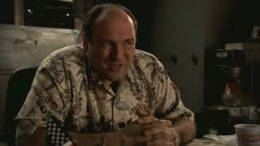
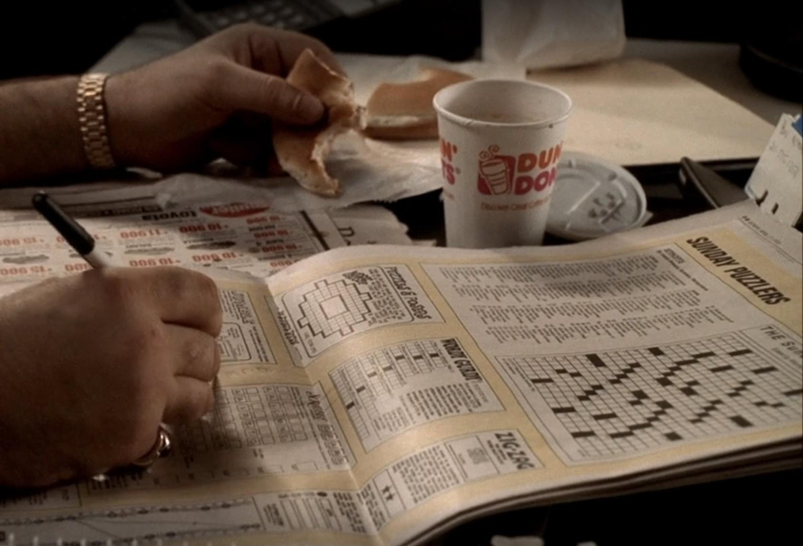
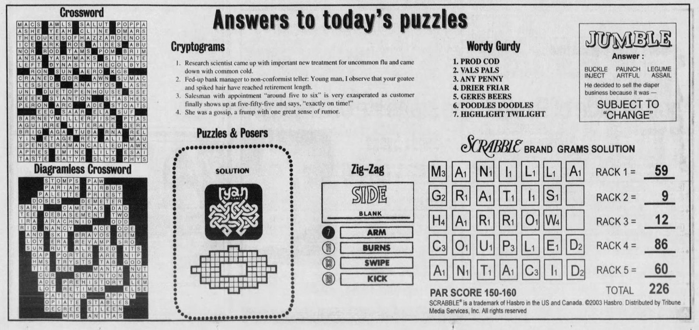

Real grids from real sources
The Sopranos, "Where's Johnny?"
Crossword by Josiah Breward (Wayne Robert Williams), Courier-News (Bridgewater, NJ), Apr. 27, 2003
Tribune Media Services



Real grids from real sources
Tribune Media Services


